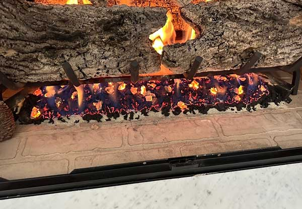
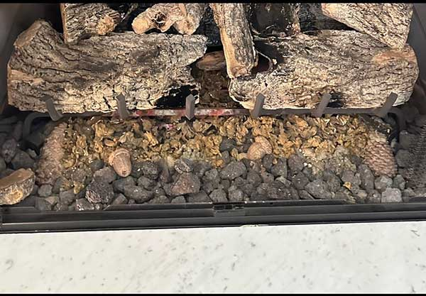

Dealing With Common Gas Fireplace Issues?
- Pilot light not lighting?
- Gas logs looking a bit worse for wear?
- System not functioning as efficiently as it once did?
If you answered “yes” to any of those — or have a different chimney or fireplace issue — Garden State Chimney is the place to call.
What’s Included in a Gas Fireplace Inspection & Cleaning?
- We disassemble the unit — removing mesh, glass doors, panels, and screens to reach everything.
- We clean the logs and media — brushing away dirt, soot, and debris, wiping down the firebox, and inspecting each log for damage.
- We check for clogging and deterioration — confirming the blower, CO detector, thermocouple, thermopile, and all controls work properly.
- We clean all internal and external elements — dusting, wiping, and vacuuming so everything looks and runs like new.
- We reassemble to manufacturer guidelines — noting any parts that may need repair and keeping you informed throughout.

Do Gas Fireplaces Need Annual Inspections?
Yes. There’s a common misconception that gas systems require no maintenance. Just like wood-burning fireplaces must be cleaned and inspected every year, so must their gas-fueled counterparts. A gas fireplace may not look dirty, but that doesn’t mean you should skip the year’s inspection.
What Are the Common Problems With Gas Fireplaces?
Most issues involve the ignition system — usually the pilot light. There are two types: a traditional standing pilot light that provides a steady, constant flame, and an intermittent pilot ignition (IPI) found in newer, more efficient models that ignites only when needed. When your flame won’t light or the system isn’t communicating, you likely have a pilot-light issue — one our team is equipped to fix.


Why Does My Gas Fireplace Smell?
Strange odors could mean a clog or leak in the gas valve, burning dust or debris, creosote accumulation in a vented model, or simply a system that hasn’t run in a while. If you notice a new smell, stop using the system and have a professional check it out.